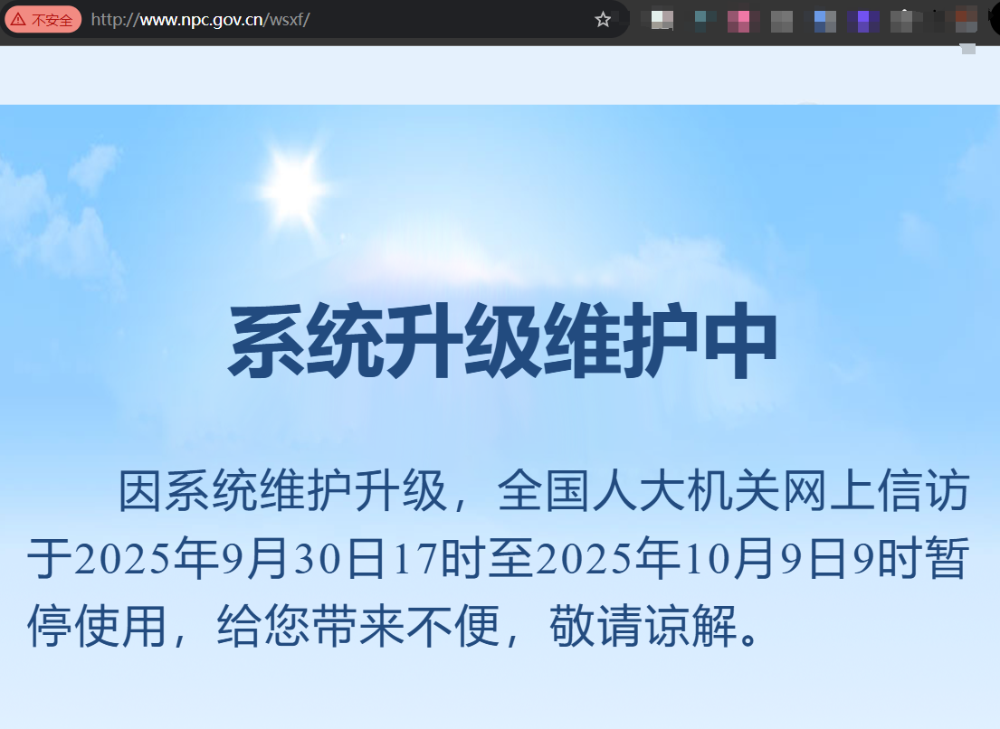

敏感网站，敏感，敏感，敏感！！！
现代版葫芦僧断案？荒唐、无耻、奇葩！
广州某法院判决离谱至极？
棠德花苑以及全国的业主们都维权无门！！！
本站创建于：2025年2月，旨在记录一段中国维权历程
本人维权20余年，已看尽广州政府嘴脸，
维权过程中的各种打击报复，家庭因此分裂。
今天，我准备拿起舆论武器，揭露真相！！！
宪法赋予我们言论自由，业主的苦必须让全国知道！请立即转发！
也欢迎大家在本页末尾评论留言
这里发帖不需要实名，也不用害怕各种敏感词，更不会被删贴
民主和自由，难得在这里体现了！！！判决书关键内容（2024）粤0106民初28919号
当事人：原告刘某某；被告某建筑公司及相关个人。
案由：被告在原告小区加装电梯时，将原告空调外机损坏，三年无法使用。期间找过街道、居委、12345及两次报警均无法处理。
判决结果：很奇葩！！！就差没有让原告给被告赔礼道歉了，诉讼费113元全部由原告承担。
审理时间：故意拖延，立案到判决耗时15个月。
赔偿对比：逻辑何在？
法院只象征性的支持拆装费200元费等，却驳回赔偿空调维修等费用1600元。这是典型的“赔小不赔大”，逻辑完全自相矛盾！
背景：广州加装电梯政策下的业主之痛
广州市政府大力推广老旧小区加装电梯，号称便民，但施工乱象频出：棠德花苑楼房11根圈梁被打断6根（超50%，威胁结构安全），设计方案要求加固却无具体措施且报审材料连加固方案都没有，所有责任推给业主。近年广东和广州住-建-系-统问题频发，甚至连广州住-建头子去年也被抓。业主安全谁来保障？原告空调被毁只是冰山-一-角，法院判决为何疑似偏袒利益方及施工方？
棠德花苑安全隐患一览
多栋楼房将11根圈梁的其中6根被打断（占54.5%），严重威胁结构安全！！！
判决书6大确定不公之处！
- 法院逻辑自相矛盾，赔小不赔大？
法院承认施工方毁了空调，赔了拆装费200元、清洗费200元（无发票也支持），却说1600元更换费“没换新不算损失”。同样没实际发生，为啥拆装清洗赔，空调不赔？这种荒唐逻辑居然发生在广州天河法院？ - 空调毁了3年不赔新机费？
检测报告确认施工方乱来导致空调无法制冷，原告要1600元换新，法院却说“没发票+没换新不算损失”。广州3年高温（35°C+），无空调生活多苦？法院不让业主恢复正常生活？ - 胜诉了还自掏诉讼费？
施工方侵权成立，赔了511元，但113元诉讼费全让原告出。被告惹祸，受害人倒贴钱？这是保护谁的利益？黑暗、奇葩、荒唐、无耻！！！！！ - 15个月才判，拖延加重苦难？
法律要求6-12个月结案，这案拖了15个月！3个夏天无空调，法院自己违-法-违-规且不解释延期原因，业主的苦谁管？ - 圈梁断一半，安全隐患被无视？
楼房11根圈梁断6根，方案无加固细节，责任全推业主。政府推电梯，法院护施工方，业主的房安全谁保障？
不止是孤例：我们时代的共同困境
维权困境：为何维权在中国这么难？
“经济衰退与某些地方政府官员的权力滥用，正让越来越多的人走上维权之路。从烂尾楼业主到被拖欠工资的工人，当司法无法提供公正，维权抗争便成为最后的表达方式。这不仅是个别官员的问题，更是救助机制失灵的警示。”
阅读知乎网站血泪史 »经济困境：人人自危的“紧缩”时代
“房地产泡沫的破裂和对未来的不确定性，让普通人捂紧了钱包。当赖以生存的资产大幅缩水，当中产阶级的梦想被现实击碎，整个社会便陷入了信心危机。您的遭遇，正是这场危机下无数家庭的缩影。”
阅读CCTV深度报道 »维稳期禁止信访
“在这个日子里面，禁止你进行线上信访活动，只准喜庆不许叫苦！”
业主维权为何如此艰难？
空调坏了、房子不安全、打官司还倒贴钱，法院判决让人寒心。加装电梯本为民生，司法疑似偏袒施工方，业主权益谁来护？请转发，让更多人关注公平正义！
（基于真实判决书及20年维权经历，仅供参考，欢迎理性讨论）
发表评论 / Read Comments
评论区使用须知：欢迎就维权问题进行理性、友善的讨论。请严格遵守法律法规。感谢您的理解。